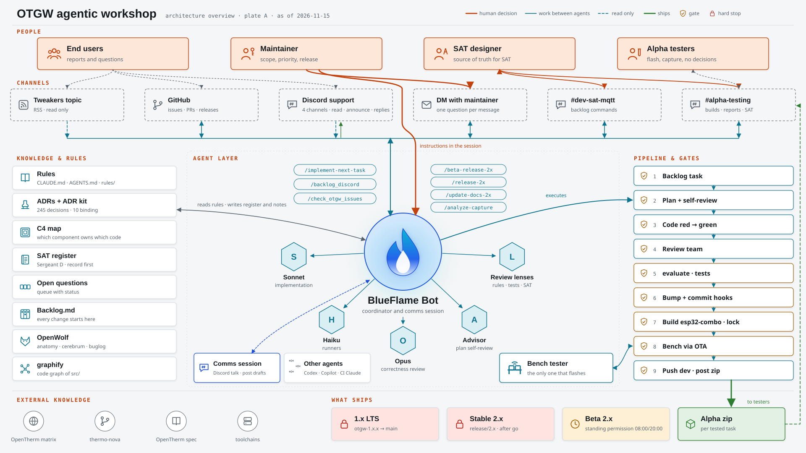
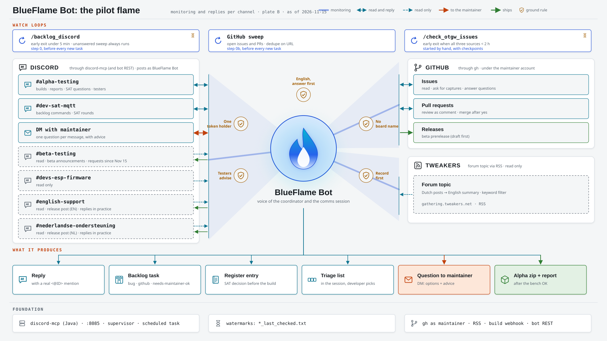

A small team of AI agents writes, tests and ships this firmware. Two people decide; the agents carry out the work; and a chain of gates that can say no keeps the result honest.
You do not need to know this project. These six terms carry the rest of the page; the glossary has the others.
The NodoShop OpenTherm Gateway (OTGW) is a small device that sits between a room thermostat and a central-heating boiler and listens to, or changes, what they say to each other. This project is its open-source firmware. The 2.x line (branch dev) runs on ESP32-S3 boards; the 1.x line is in maintenance.
Smart Autotune Thermostat: a control mode in which the gateway itself steers the boiler. It was designed on paper by one person (Sergeant D) and coded by another (Alex). There is no written design, so what the designer says is recorded before anything is built.
An agent is an AI model that reads files, runs commands and edits code. A session is one running agent with its own working folder. Several sessions run at once, each with a role. A subagent is a helper that a session starts for one narrow job.
A skill is a written procedure that an agent loads when it is called, for example /implement-next-task. The behaviour of the workshop lives in these text files, not in program code. That makes it easy to review and easy to change.
A hook is a small script that runs automatically around an action (an edit, a commit). A gate is any automatic check that can refuse a step. Some rules have a gate; many rest on agreement only. This page shows which is which.
An Architecture Decision Record: one numbered file per design decision, with the context and the alternatives. Agents may propose one; only a person accepts it. After that it is never edited, only replaced by a new one.
Exactly two people hold decision power. Everyone else gives input and evidence: they can cause a task to exist, but not cause it to be built.
Decides scope, priority, waivers and releases. Accepts every ADR. Unlocks each hard stop with an explicit yes for that one action.
Decides how SAT behaves. His recorded words rank above the reference code. A change to how SAT controls the boiler waits for his OK.
Flash builds and send captures. They give evidence, never decisions: a change request becomes a task labelled needs-maintainer-ok. Their evidence may verify and close an existing task.
Report on GitHub, in the Discord support channels and on the Tweakers forum. A bug report or pull request becomes a task directly; a feature request waits for the maintainer.
In the background: Alex wrote the upstream SAT code (pinned, read-only, no decision role here); Schelte Bron wrote the PIC firmware and keeps the equipment matrix that is checked first for every "does my boiler work?" question; read-only members on Discord get one answer, "Changes go through Robert." Who is a tester or a read-only member is kept in a local file, not in the repository.
| Action | Robert maintainer | Sergeant D SAT designer | Testers | End users, contributors | Agents |
|---|---|---|---|---|---|
| Have a task created | decides | input onlya task may follow at once | input onlytask waits for his OK | input onlybug or PR: direct; feature: waits | standing permissionevery change starts with a task |
| Prioritise and release work | decides | · | · | · | carries outfixed selection order |
| Define SAT behaviour | decidesonly in listed exceptions | decides | · | · | · |
| Have code changed | decides | decidesSAT control behaviour | · | · | standing permissioninside a task |
| Accept an ADR | decides | · | · | · | carries outmay only propose |
| Grant a waiver | decides | · | · | · | · |
| Push to the two working lines | decides | · | · | · | standing permissionafter the gates |
| Flash a bench unit | decides | · | · | · | carries outonly the bench tester |
| Publish a public 2.x beta | decides | · | · | · | standing permissionslot at 08:00 or 20:00 |
| Stable release | per-action yeshard stop | · | · | · | · |
Push to main, force-push | per-action yeshard stop | · | · | · | · |
| Flash the PIC chip | per-action yeshard stop | · | · | · | · |
| Merge someone else's pull request | per-action yeshard stop | · | · | input onlysubmits the PR | carries outreview and test |
The Agents column is room to act, not authority: every cell rests on a permission or a decision from a person. In the register, 41 of 353 SAT entries were decided by the maintainer ("Not by Sergeant D."), so that exception is not rare.
Each needs Robert's explicit yes for that one action, as a reply to a direct message that names the action and its target. A general "go on" does not count.
mainmain: never)Inside these, agents work on without asking, as long as the conditions hold.
dev (2.x) once the task is committed, build and evaluator are green and the bench is OKotgw-1.x.x (1.x) under the same conditionsSince 2026-11-12 an open decision goes to Robert as a Discord direct message, through the coordinator session. Never as a blocking question in the terminal: his reason was that a stopped terminal session freezes the progress. The agent keeps working on what is not blocked.
One open decision. May a hard stop also be confirmed by direct message?
main or a force-push. The technical brake is that six skills, among them the release and flash skills, cannot be started by the model itself. A permission check outside the repository can still refuse.Plate A is the map of the workshop. Read it from the top: people, the channels they use, the agents in the middle, knowledge on the left, the pipeline on the right, and what ships at the bottom.

#dev-sat-mqtt and #alpha-testing.The workshop runs as a handful of Claude Code sessions at the same time. One coordinates; the others build, talk or test. A role is an agreement between sessions, not a program.
Inside the work cycle (/implement-next-task) the main session keeps four things in its own hands: the design, the advisor calls, the final judgement on evidence, and every Discord post. The rest is delegated by kind of work.
Model chosen by the maintainer. Designs, judges the evidence, and is the only one that bumps, commits and pushes.
Implements code, tests and docs. "Strong coder, faster and cheaper." Also reviews through separate lenses: project rules, tests and evidence.
Runs the build, the evaluator and the tests and reports the raw output. "Mechanical; must quote output verbatim."
One strong critic on end-to-end correctness. The assignment is to refute, not to approve.
Critical review of the plan before any code is written. Without the advisor tool, one Opus reviewer does it.
The main session reads the raw evidence itself. The skill says why: "A weaker model claims PASS more easily. Never accept a subagent's verdict on its own." Before a criterion is ticked, it reads the exit code, the success line, the timestamps of the artefacts and the test counts. Helpers never bump, commit or push.
Besides Claude Code, Codex and GitHub Copilot each read their own instruction file, and Claude also runs in GitHub Actions (on an @claude mention, and as a reviewer on pull requests from the same repository). One block of core rules is word-for-word identical in all three instruction files. A test compares them; where a file disagrees outside the block, CLAUDE.md wins.
CLAUDE.md does not define it./flash skill, the translation skill and parts of the Codex and Copilot files still build or flash directly. An agent that follows them literally breaks the core rules.BlueFlame Bot is not a program with its own logic. It is the Discord identity under which agent sessions read and write, and the face of the workshop to the outside world. What it does is written in commands, skills and rule files that a session loads.
The bot account on Discord: channels and direct messages. Runs through one small local server process that holds the bot token.
A separate sender (a webhook) that can do one thing: post the flash zip to #alpha-testing.
On GitHub the bot is not recognisable as a bot: a comment asking for captures or a review appears under the maintainer's name.
On the Tweakers forum it only reads the public feed. It never posts there.
Two sessions speak through the persona: the coordinator (decisions to the maintainer, reports, the ledger) and the comms session (drafts of release notes and posts, answers in support channels). The design is instruction-driven: to know what the bot does, read the commands and rules. That makes it easy to review and quick to change, and it also makes it depend on the discipline of the session that follows them.

By the written procedure, the four support channels are listening posts with an announcement function. In practice the coordinator and the comms session also answer users there. The blue rings mark what happens in practice without a written procedure.
| Channel | Reads | Replies | Announces | Triggered by |
|---|---|---|---|---|
| Discord, as BlueFlame Bot | ||||
| #alpha-testingbuilds, reports, testers | newest 40 on every run | answers testers, SAT questions | task notice, plan, report, alpha zip | unanswered sweep; work cycle |
| #dev-sat-mqttbacklog commands, SAT rounds | newest 25 plus new since last run | backlog answers, SAT questions | – | unanswered sweep |
| DM with the maintainerone decision per message | his answers | questions with options and advice | – | any session, through the coordinator |
| #beta-testingpublic beta testers | 25 per broad scan | answers and a design proposal, in practice | beta announcement; note on a stable release | broad scan; release skills |
| #english-supportend users | 25 per broad scan | answers and capture requests, in practice | stable release, in English | broad scan; release skill |
| #nederlandse-ondersteuningend users, Dutch | 25 per broad scan | answers, in practice | stable release, in Dutch | broad scan; release skill |
| #devs-esp-firmwaredevelopers | 25 per broad scan | – | – | broad scan |
| GitHub, under the maintainer's account | ||||
| Issuesbug reports, questions | open issues; comments only on bugs | asks for captures, answers questions | – | GitHub sweep; broad scan |
| Pull requestsoutside contributions | open pull requests | review as a comment; merge only after a yes | – | GitHub sweep |
| Releasesdownloads | – | – | beta prerelease, stable release; draft first | release skills |
| Tweakers forum, as an anonymous reader | ||||
| Forum topicDutch community | RSS feed, keyword filter, English summary | – | – | broad scan |
Nothing runs on a timer. Two loops run before every new task; the broad scan is started by hand. Each loop keeps a watermark, a small timestamp file that says when it last looked, and may skip a run that comes too soon.
The bot first asks who is speaking. Answers on Discord are in English, start with the answer, and use a real mention. Technical claims are checked in the code first.
answers when he addresses the bot; a decision typed in a channel counts
treats his ordinary chat as a backlog command
records every correction or decision first, then answers
announces builds to him; changes SAT control behaviour without his OK
asks questions, uses the feedback, lets evidence close an existing task
implements, re-prioritises or closes anything because a tester asks
one reply: "Changes go through Robert."
turns anything they write into code, a task, a build or a register entry
triage, a task or a note; asks for captures on GitHub; checks the equipment matrix first for boiler questions
posts on Tweakers; claims support from the brand name alone
An unclear point in SAT is never filled with a guess. It becomes a question in a queue: one question per message, in plain English, with possible answers A, B, C, their consequences and a recommendation. He often answers in one line. On 2026-11-15 the queue held 18 open questions: 4 asked, 14 waiting.
With a real mention, answer first.
From a bug, an issue or a request that waits for the maintainer.
A SAT decision, written down before the build.
In the session; a developer picks.
Direct message: options and advice.
Only after the bench tester's OK.
#beta-testing has no watch loop for requests. Since 2026-11-15 a tester asks for features there, the maintainer gives the bot orders there and Sergeant D decides there, but the unanswered sweep covers only #alpha-testing and #dev-sat-mqtt.#dev-sat-mqtt. The command accepts "mark task done" or "assign" without checking who asks; only the general tester rules limit it.Every firmware task travels the same chain and gets its own version tag, so a tester can tell two builds apart. Almost all of it runs on the maintainer's workstation; GitHub's CI is a safety net, not the release machine.
backlog command-line tool. First action on pickup: mark the task In Progress.evaluate.py --quick (34 of its 42 checks) and the test runner.build.bat and ./build.sh.git push to the dev line.#alpha-testing, without pinging anyone.Station 2: Sergeant D's OK for SAT control behaviour. Any station: a question to Robert by direct message. After the belt: every hard stop.
Station 8, between build and push. The developer asks through the coordinator, with the build hash, the artefact path and the behaviour to check. For a bug: the reproduction on the old code too.
Several fixes under one tag would destroy the tester's A/B signal, so the bump is enforced by a git hook. In eleven days the tag went from beta.79 to beta.327.
From dev, for every tested firmware task. Posted to #alpha-testing by the pushing session.
From dev, as a GitHub prerelease and a post in #beta-testing. At most one per 12 hours, at 08:00 or 20:00; one-hour soak, no waiver; draft first.
On its own branch release/2.x. Three checkpoints, a 24-hour soak, capture runs on Windows, Linux and macOS, a push and build freeze. Announced in Dutch and English.
From the maintenance line otgw-1.x.x; stable goes to main. The procedure lives on that line and is never run from dev.
Since 2026-11-15 the beta is put together shortly before the slot and the soak runs on the release build itself, so the end of the soak is the moment of publication. A soak is simply letting the build run on a real unit and watching it.
python build.py to return 0; another forbids calling it directly because of a lying exit code. The wrapper rule leads. The release skills and the CI workflow also build outside the wrapper.beta.N.Rules reach a session in three ways: at session start, when the first file in a certain folder is opened, or when a skill is called. Some rules have a script that refuses. Many rest on agreement. Both are shown here.
Codex and Copilot do not load the rule files. A rule that lives only there, such as the equipment-matrix rule, does not reach them.
--no-verify skips them all. The skill forbids both; nothing checks it.| Rule | Claude hook | Git hook | Evaluator | Test | CI | Script | Review | Agreement only | Note |
|---|---|---|---|---|---|---|---|---|---|
| Task files are never edited directly | blocks the edit tools; a shell command slips past | ||||||||
| The evaluator shows no new FAIL | |||||||||
| A firmware commit carries its own version bump | |||||||||
| A commit names its task, and the task file exists | |||||||||
| No ArduinoJson; text stays in flash; platform boundary | binding ADR-146 and others | ||||||||
| No String class in hot code paths | warning only, full run only | ||||||||
| The firmware compiles | not on docs-only pushes | ||||||||
| One build at a time, at most 4 compiler jobs | |||||||||
| The alpha zip comes from the current commit | |||||||||
| The three instruction files do not drift apart | local test run only | ||||||||
| Changes respect ADR enforcement blocks (ADR-101, ADR-177) | off since 2026-05-31 | ||||||||
| Binding ADRs 201, 217, 242 and 239 | host tests and layout check, local only | ||||||||
| OpenWolf memory rules | advises, never blocks | ||||||||
| Build only through the wrapper | |||||||||
| Only the bench tester flashes | |||||||||
| A hard stop needs a yes per action | release skills cannot be started by the model | ||||||||
| Questions go by direct message, not in the terminal | |||||||||
| Done only with evidence; old code against fix | |||||||||
| A SAT decision is recorded before it is built | the test guards the rule text, not the behaviour |
Almost every store has one way in for writing and a rule that says when to read it. Only a few have a hook, test or CI step that enforces that. Freshness differs a lot: the backlog and the SAT register change almost daily; the code graph dates from July.
The work queue and the memory of each task: criteria, plan, notes, final summary.
Numbered design decisions.
Every correction and decision by the SAT designer, numbered.
The open questions and their status: queued, asked, answered, dropped.
Which component owns which code, in 20 documents.
A graph of the source: what calls what.
Memory between sessions: a file index, lessons and do-not-repeat notes, a bug log.
The OpenTherm protocol specification v4.2, the cited SAT specification, the PIC firmware specification, read-only reference projects.
How to build, bench, version and work in parallel; which directive holds since when.
Screenshots, bench logs, verification reports, spike notes.
The ADR kit is the maintainer's open-source toolkit for architecture decisions. Agents write a decision as Proposed. It becomes Accepted only after explicit human approval, and from then on its content does not change.
All required sections are present and filled; file name and number match.
deterministicThe context names at least one concrete artefact.
heuristicThe decision names one concrete choice, in the imperative, without hedging.
heuristicFile name, number and cross-references agree; no duplicate numbers.
deterministicCounted from the status field in each file. 40 new ADRs in October 2026 and 43 in the first half of November.
An ADR can end with an Enforcement block: a few machine-readable rules ("this pattern must not appear in a change"). A tool called adr-judge is meant to check each commit against those blocks. A binding ADR goes further and must name an automatic gate. In practice the ten binding ADRs fall into three groups.
ADR-088, 091, 097, 146. Each has a check in the evaluator, and the evaluator runs in CI.
Binding ADR → evaluator check → CI
ADR-201, 217, 242 have host tests in the local test run. ADR-239 has a layout check inside the local build. No CI workflow runs them.
Binding ADR → test or build script → local run
ADR-101, 177. Their gate is adr-judge at commit time, and that step has been switched off since 2026-05-31. Review is what remains.
Enforcement block → adr-judge in pre-commit → off
Separately, a governance lint does run in CI when ADR files change: it checks that replaced decisions link both ways, that every ADR is in the index, and that a named gate really exists.
Arrows show direction: ← read only, → write, ↔ both. The label "workstation" marks a link that only works from the maintainer's own machine.
#alpha-testing (at most 10 MB)workstation@claude requestsThe seven GitHub workflows: the build and evaluator gates, ADR governance, the dependency scan, the Claude review and the Copilot trigger.
Every contact with testers and with Sergeant D, every decision by direct message, every flash and every publication.
No secret is stored in the repository; it only names them and says where they live. A guide for a second machine exists, but the bot token, the webhook address, the ledger and the knowledge about the bench units stay outside the repository. On 2026-11-05 Robert decided not to add a second bench, a build runner or an always-on host for now.
Measured in the repository on 2026-11-15, next to the previous snapshot of 2026-11-04 where one exists. Each tile says how it was counted, so the count can be repeated.
The last throughput measurement found the largest wait in the stock of open tasks, not in the build, the bench or the answers. That is why the maintainer decided on 2026-11-05 not to scale up for now.
All twelve improvement tasks from the snapshot of 2026-11-04 were carried out. The new risks sit in the drift between what happens and what is written down.
None of the findings touches the firmware or the evidence chain of a task directly: the gates that really refuse all work. The risk is in the next agent, which reads a command or profile that prescribes an older way, or misses a role or channel that exists only in task notes. The finding on binding ADRs deserves extra attention: there the rules promise an automatic gate that is not there.
#beta-testing as a request channel and the delegation of 2026-11-15 exist only in skills and task notes.Write it down as a fixed role with its own rules, leave it as a practice, or move its tasks back to the coordinator?
Advice in the document: write it down.
May the coordinator make technical choices inside a task and report afterwards, while scope, priority and hard stops stay a question up front?
Advice in the document: yes, exactly that.
Only the free, deterministic pass; also the model-based pass; or drop the claim from the rules?
Advice in the document: the deterministic pass, at commit time and in CI.
These are proposals, not tasks yet. The document groups ten proposals into three scenarios: correct (a day), write down (a week, after these decisions), maintain (ongoing).